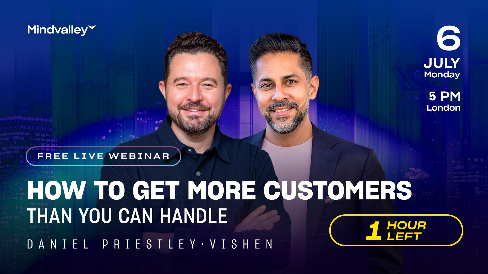
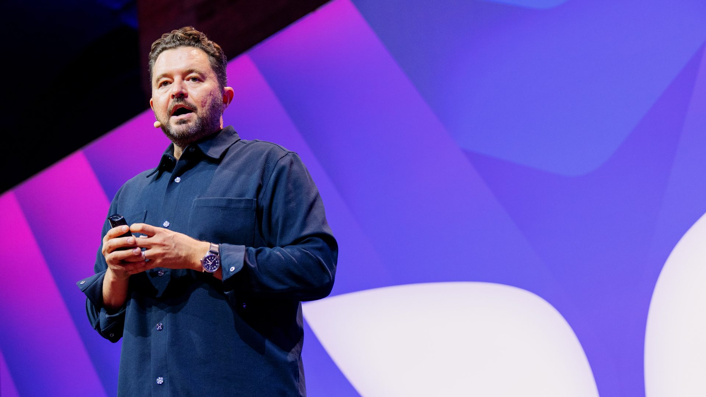
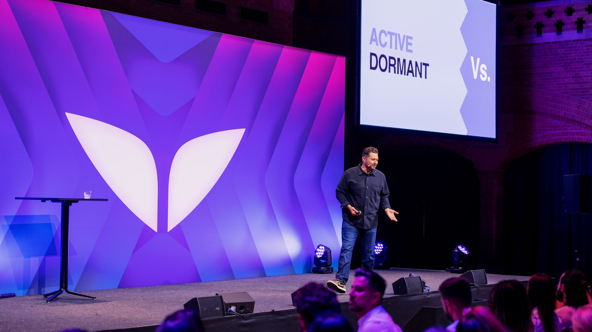

Curriculum
Curriculum
Curriculum
Curriculum
The full curriculum and scripts for the promo webinar and the two-evening live intensive with Daniel Priestley — recorded at Mindvalley U. How to get high-paying customers lining up to do business with you, and build the 12-month campaign calendar that keeps them coming.
Prepared by Gareth Winter, Mindvalley Creative Director & Head of Content — for Daniel Priestley. Reflects the 15 June planning call. (The Speaking & Influence Summit is a separate, linked project — not covered here.)
The idea the whole intensive stands on: only oversubscribed businesses make a profit. Profit isn't a reward for working harder — it's what happens when demand outstrips supply. Most founders build first and hope. The skill we teach is the opposite: manufacture demand on purpose, name a capacity, and have high-paying customers lining up to work with you — with AI doing the heavy lifting.
A focused on-ramp: the webinar proves why you must get oversubscribed (concept + principles, no implementation). Day one builds the principles and foundations. Day two builds your 12-month content & marketing campaign calendar — from now into 2027. Each day is bookended by the wider entrepreneur journey, so attendees see exactly where this fits and what comes next.
Daniel-led. Proves the one big idea and the principles behind it — then points to the intensive for the how. The concept, not the implementation.
Why oversubscribed wins, naming your capacity, connection over competition, signals before sales, and your product & service ecosystem for high-paying customers.
The three-part year, short-form / long-form / lead-form, Pain·Prize·Problem·News — built live into a calendar that gets you oversubscribed and keeps you there into 2027.

A value-first promo session to fill the intensive. The "five things to know before you buy a bike — today we teach one" model: Daniel proves the concept and the principles of getting oversubscribed and why it's non-negotiable in the age of AI — then sends people to the intensive for the implementation. No how-to here; the implementation is the paid room.
90 minutes · ~60 min teaching + ~30 min Q&A · Daniel-led · Promo on-ramp to the intensive (18 & 19 July). Concept + principles only — no implementation on camera.
HOST: Welcome in — wherever you are in the world, take one breath and land. You're in the right room. I'm going to hand straight to the man you came for. Daniel.
DANIEL: Thank you. Let me start with the frustration that I think brought a lot of you here. You've got something good — a product, a service, a skill — and you're working hard. But the customers come in a trickle, the income plateaus, and a quiet voice says "maybe I need to work harder, build more, get a bigger audience." If that's you, you're completely normal — and tonight I'm going to show you why that voice is pointing you in exactly the wrong direction.
And here's the backdrop: we are in the most opportunity-rich moment in business history. In the age of AI, every business is up for grabs — including yours. If you're here, you're early. So drop a "yes" in the chat if you're ready to stop chasing customers and start having them come to you.
DANIEL: Here's the rule nobody taught you. You don't have a product problem. You have a demand problem. And underneath it: only oversubscribed businesses make a profit. There is no profit god who rewards effort. There is only demand and supply tension. When demand outstrips supply, you're profitable, you set the price, you pick your clients. When supply outstrips demand, you discount, you chase, you burn out.
Most founders are supply-side — they think the business exists because they have something to sell. The ones who win are demand-side — they know the business exists because someone wants to buy, so they manufacture the demand first. And in the age of AI this matters more than ever, because AI lets a tiny team create and reach customers at a scale that used to need fifty people. The leverage is extraordinary — but only if you point it at demand.
DANIEL: So how do you become oversubscribed? Tonight I'll give you the principles — not the implementation. Think of it like a bike: tonight is why you must have one and the principles that make it work. Learning to ride it — that's the intensive. Here are the four principles.
DANIEL: Sit with that last one for a second. Imagine being able to say that — truthfully — about your own business. That's what oversubscribed feels like. And notice I haven't told you how to build it yet. That's deliberate. The how is two full evenings of work — and that's exactly what the intensive is.
DANIEL: Let me zoom out so you can see where this sits. Every business moves through the same journey — from finding the right opportunity, to product-market fit, to go-to-market, to scale, to exit. Getting oversubscribed is your go-to-market engine — it's what turns on demand once you've got something people want. Master this, and you've unlocked the stage most founders get stuck at. And it opens the door to everything that comes after it.
DANIEL: So here's the invitation. Over two evenings at Mindvalley U — the 18th and 19th of July — I'll take you from these principles to a finished plan in the intensive, The Science of Growing Customers: day one, the foundations of getting oversubscribed; day two, we build your entire 12-month content and marketing campaign calendar together, so you walk away with the actual machine, not just the idea. You'll leave able to turn on demand and keep it on, into 2027.
If tonight landed, that's where you build it. Details are below — no pressure, just an open door.
DANIEL: Let's take your questions. And tell me in the chat — what's the one thing that shifted for you tonight? Keep it. And remember: you don't have to do everything at once. Be a directionalist, not a perfectionist — just move in the right direction.
The two-evening live intensive. Day one installs the principles and foundations of getting oversubscribed; day two builds your 12-month content & marketing campaign calendar — the engine that keeps high-paying customers coming. The full run-of-show for both evenings is below.

Day one installs the foundations: why oversubscribed wins, how to name and telegraph a capacity, how connection beats competition, and how to make your market before you make your sales — all aimed at attracting high-paying customers. Bookended by the wider entrepreneur journey so everyone sees where this fits.
DANIEL: Welcome. Before we go deep, let's zoom all the way out, because I want you to see exactly where these two days fit. Every business travels the same road: you find the right opportunity, you test it, you reach product-market fit, you go to market, you scale, and one day you might exit. Almost everyone in this room is somewhere around go-to-market — you've got something good, and now you need customers, reliably. That's what getting oversubscribed is: your go-to-market engine.
I'll bookend both days like this — start by zooming out, finish by showing you what comes before and after — because by the end you'll know not just how to get oversubscribed, but where you are on the whole journey and what your next move is.
DANIEL: And one frame for the whole weekend: we're in the most opportunity-rich moment in business history. AI means a tiny team can now do what used to take fifty people. You are not late — you are early. Let's begin.
Shift advanced: Mindset. From "build more / work harder" to "manufacture demand."
Pillars hit: Critical Reflection · Active Study & Writing.
DANIEL: Let's anchor the one principle everything else hangs from: only oversubscribed businesses make a profit. Profit is not a reward the universe hands out for working hard — there's no profit god. There is only demand and supply tension. If you had a million followers but could take only twelve coaching clients a year, you'd make a fortune, because demand would wildly outstrip supply. If you sell something everyone can get, the price falls to zero.
DANIEL: Ninety percent of founders are supply-side: they believe the business exists because they have something to sell, so they build first and hope. The successful ones are demand-side: they know the business exists because someone wants to buy — so they manufacture the buyers first, often before the thing is even built. Your job, from tonight, is to manufacture demand on purpose.
DANIEL: AI cuts both ways. It means every market is up for grabs — including yours — so demand is more winnable than ever. And it means you can create content, reach audiences, and serve customers with a tiny team. But all that leverage is wasted if you point it at supply. Point it at demand, and you become unstoppable.
Shift advanced: Mindset + Tool Kit Upgrade. A capacity number and a connection target you can act on.
Pillars hit: Active Study & Writing · Critical Reflection.
DANIEL: To create the tension, name your official capacity — the number of customers you can serve while truly delighting them. A restaurant for 50 is delightful; cram in 80 and everyone suffers. "Unlimited" sends your price to zero. So pick a number — and for a high-value business, smaller is often more profitable, because scarcity is where the margin lives.
DANIEL: Picture a line: competition at one end, connection at the other. The more connection you build, the less competition you face — people don't shop around for someone they feel connected to. A coach delivers a brilliant talk to 300 people and says, "I take ten clients a year." Three hundred feel connected; ten spots exist. Instantly oversubscribed — no discounting, no chasing. That's the whole game: connection first, capacity named, demand visible.
DANIEL: The magic line — and the goal for everyone here — is to be able to say, truthfully: "I work with 100 clients a year, and I have 1,000 people on the waiting list, so I select who I work with." When the market can see that more people want you than you can take, you stop discounting and start choosing — and high-paying customers line up. Within about three months of running the campaign we'll design tomorrow, you can be saying exactly that.
Shift advanced: Tool Kit Upgrade. A signals-then-sales method and a four-tier ecosystem.
Pillars hit: Active Study & Writing · Rapid Implementation.
DANIEL: Most people scream "buy my stuff" at strangers. Flip it: first make your market, then make your sales — and the practical rule is first get signals, then get sales. A signal is small and low-risk: a waiting list, a workshop booking, a scorecard, an info-pack request, a "yes, send me details." Collect signals first and you learn who actually wants it, you create visible demand, and you walk through an open door instead of kicking a closed one.
DANIEL: People buy to resolve tension: their current reality doesn't match their desired reality, there are obstacles, and they've tried things that didn't work. You are the path of least resistance between the two. And they act when three conditions line up — logic, emotion and urgency. Logic and emotion are the engine; urgency is the spice. Hone your message until it speaks to exactly that.
DANIEL: Give people a ladder to climb. Build four tiers around your signature work: a free gift (no strings — your content); a free diagnostic that costs them data, not money (a scorecard or assessment); a gold / silver / bronze transformation offer; and a subscription for the ongoing relationship. The free tiers create growth; the paid tiers create profit. High-paying customers need a clear, confident path to the top of that ladder.
DANIEL: Let's close the loop. Today you learned why oversubscribed wins, you named a capacity, and you've got a way to make your market before you make your sales. Now zoom back out: this is your go-to-market engine. Behind it sits product-market fit; ahead of it sits scale, team, and one day an exit. Tomorrow we take everything you've decided today and build the machine that delivers it — your 12-month campaign calendar.

Day two is build day. We turn yesterday's foundations into a concrete, repeatable campaign calendar — now into 2027 — that gets you oversubscribed and keeps you there. The spine is the three-part year and Daniel's short-form / long-form / lead-form rotation, with AI producing the content. Everyone leaves holding a finished calendar.
DANIEL: Welcome back. Quick zoom-out: yesterday was the why and the foundations; today is the how, built into a calendar you'll actually run. By tonight you'll have a 12-month content and marketing campaign mapped out — the engine that turns the principles into a steady flow of high-paying customers. Let's build.
Shift advanced: Habit + Tool Kit Upgrade. A marketing rhythm they run every week, all year.
Pillars hit: Active Study & Writing · Rapid Implementation.
DANIEL: I learned this at 19 from my first mentor, and I've run it for 25 years. Your year has three layers:
DANIEL: Measure the week on one dashboard — LAPSE: Leads, Appointments, Presentations, Sales. When I launched my first company I ran the identical week 43 times — and went from zero to $1.3M with no audience and no brand. ScoreApp's first year ran the same way and now does over half a million a month. The magic isn't novelty. It's a repeatable week you never stop running.
Shift advanced: Habit + Tool Kit Upgrade. A content engine that's manageable forever and fed by AI.
Pillars hit: Active Study & Writing · Rapid Implementation.
DANIEL: Here's the rotation I've been giving people, and it works whatever your business: short form, long form, lead form.
Played out weekly, it's simply: short form into long form into lead form, repeat. Tiny daily updates, a monthly teaching asset, a quarterly offer. Very manageable — and it compounds.
DANIEL: For the daily short form, rotate four angles: Pain (something that hurts), Prize (something they want), Problem (what's stopping them), and News (tie it to something happening live right now). Pain, prize, problem, news — you'll never run out of things to say, and it stays current.
DANIEL: Everyone thinks AI is just large language models. But AI is also the algorithm that pushes short-form content into new audiences. A daily short-form post tuned to those audiences is, right now, one of the most powerful ways to leverage AI that exists. And you can use AI to produce the rotation — draft the hooks, expand the long-form, build the lead-form pages. We'll use prompts, and a "Get Oversubscribed" Claude skill, so the calendar half-builds itself.
Shift advanced: Tool Kit Upgrade + Show-Up. A campaign that visibly creates demand-supply tension.
Pillars hit: Active Study & Writing · Rapid Implementation.
DANIEL: Now we make the calendar oversubscribe you. Take the capacity you named yesterday and telegraph it through the campaign: the lead form collects signals, the waiting list fills, and you publicly hold the line on capacity. Within about three months of running this, you can truthfully say: "I work with 100 clients a year, 1,000 are on the waiting list, and I select who I work with." That sentence is what attracts high-paying customers — because scarcity plus connection lets you set the price.
DANIEL: Map it to LAPSE and your capacity-times-fifty connection target. How many signals a week does the lead form need? How many conversations? How many high-paying clients does that convert to across the year? When the numbers are on the page, "get oversubscribed" stops being a slogan and becomes a plan you can run on Monday.
Shift advanced: Show-Up + Habit. A finished plan they leave holding, and the commitment to run it.
Pillars hit: Active Study & Writing · Social Learning & Discourse · Rapid Implementation.
DANIEL: Let's assemble the whole thing on one page. Open your workbook (or the Claude skill) and we'll fill it in together, month by month, now into 2027.
DANIEL: Last zoom-out. You came in around go-to-market, and you're leaving with the engine that wins it. Behind you is product-market fit; ahead of you is scaling — more offers, a team, systems, and eventually the choice to exit. Getting oversubscribed is the door into all of it. Keep moving in the right direction — be a directionalist, not a perfectionist — and remember: the more fun you have building this, the more money you'll make doing it.
Across his 12 sessions in Entrepreneurship Mastery, Daniel's teaching earned an average of 9.55 / 10 from 700 member ratings — collected after each live class. A sample below, including the sessions this intensive is built from.
Source: post-session member ratings, Entrepreneurship Mastery 2025 cohort (Mindvalley curriculum records). "n" = number of member ratings for that session. The public written stories at stories.mindvalley.com praise the programme and its "world-class speakers," but the loaded excerpts don't name individual teachers — so only Daniel's own rated sessions are shown here.
9.87 / 10
Designing Your Next 12 Months: From Momentum to Market Leadership — the planning session this intensive's Day 2 is built from.
9.74 / 10
High Value Offers & Price Anchoring — pricing for the high-paying customers the intensive targets.
9.61 / 10
Monetization Frameworks — Upsell, Cross-sell, Subscription Models — the product & service ecosystem in Day 1.
9.55 / 10
The 5 Pillars of Influence — Visibility, Value, Voice, Product, Partnerships — positioning that fills the demand engine.
9.51 / 10
Your Signature Positioning — How to Stand Out and Be Known — honing the message behind the campaign.
9.26 / 10
Oversubscription Strategies — How to Make People Want In — the namesake session at the heart of this intensive.